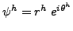
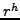
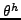
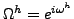
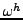
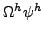

The two-dimensional Dirac equation of quantum electrodynamics (QED) describes the interaction between electrons and photons. Large scale numerical simulations of the theory require repeated solution of the two-dimensional Dirac equation, a system of two first-order partial differential equations coupled to a background gauge field. Traditional discretizations of this system are sparse and highly structured, but contain random complex entries introduced by the background field. For even mildly disordered gauge fields the near kernel components of the system are highly oscillatory, rendering standard multilevel methods ineffective.
Recently, least-squares finite element methods have been used to discretize the governing equations of QED. The resulting linear systems are ideal because they agree spectrally with the continuum equations, are amenable to solution by multilevel iterative methods, and satisfy important properties of the continuum theory, including chiral symmetry, the absence of species doubling, and gauge invariance. The most important of these properties is gauge invariance. It states simply that an arbitrary transformation of the unknown, , by a member of the gauge group (U(1) in the case of QED) does not change the physics of the model. Traditional covariant finite-difference discretizations of the Dirac equation capture the property of gauge invariance in a trivial manner. While previous least-squares discretizations do retain gauge invariance, they do so through a complicated gauge fixing process.
The objective of this paper is to present a new least-squares discretization that naturally avoids the need for gauge fixing. This is done by assuming that the finite element solution takes the polar form  , where  and  are chosen from an appropriate bilinear finite element space. In the finite element setting, a U(1) gauge transformation of QED can be written as . Choosing  from the same bilinear finite element space ensures that the transformed unknown, , has the assumed polar form. Then, applying the least-squares finite element methodology results in a discretization for which gauge invariance is straight forward.
The trivial gauge invariance of the method comes at a price, however, since the polar representation on the unknown makes the governing equations inherently nonlinear. To carry out the discretization we first linearize the governing equations and apply the least-squares methodology to the resulting linear system. The subsequent matrix equation is then solved via an algebraic multilevel method. To obtain a good initial guess on the finest grid a nested-iteration approach is used. The computational performance and physical properties of resulting solution methodology are discussed.